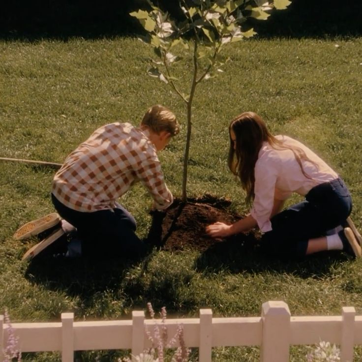
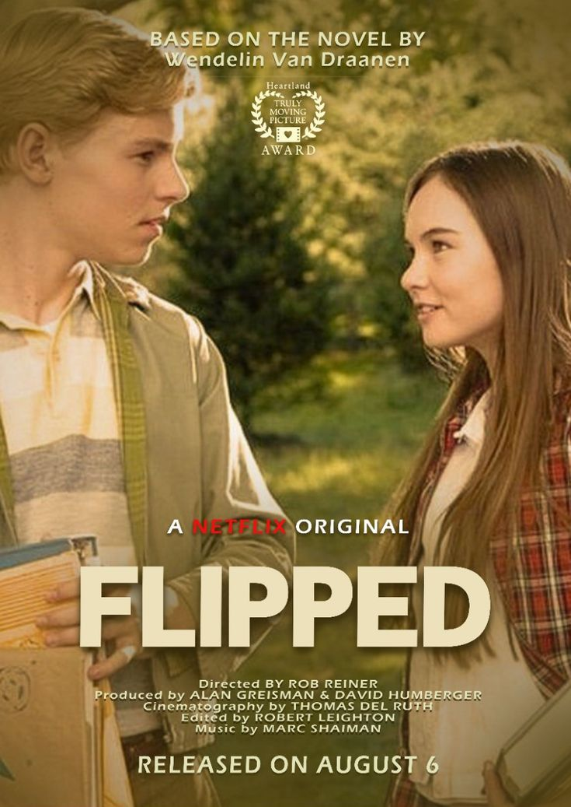

Romance, Drama, Coming-of-Age
2010
90 minutes
Rob Reiner
Told from the alternating perspectives of Juli Baker and Bryce Loski, Flipped follows two neighbors as they navigate friendship, family, and first love. As they grow older, each begins to see the other—and themselves—from a completely different point of view.